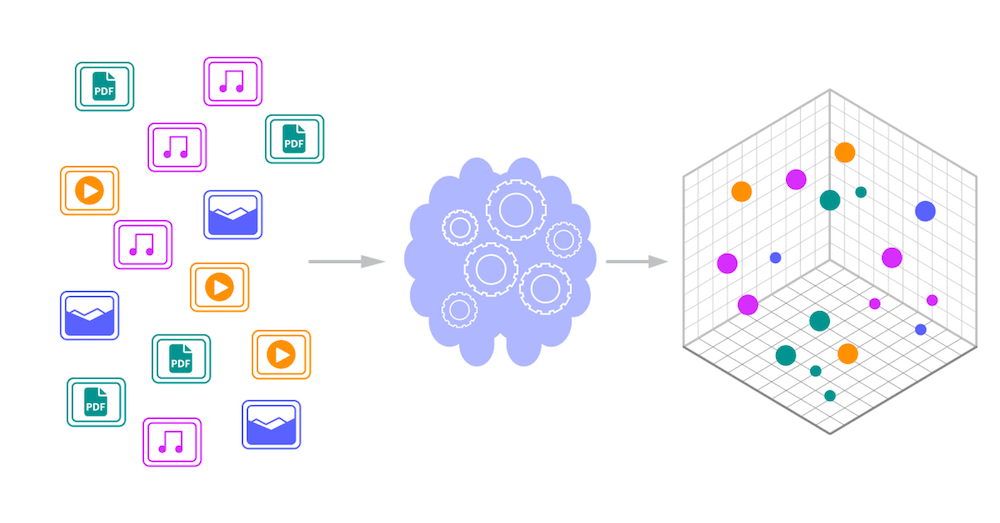

向量数据库
在 AI 时代，我们处理的数据形态发生了根本变化。
传统数据库存储的是结构化数据：数字、字符串、日期。
AI 应用处理的是语义：一段文本的含义、一张图片的内容、一段语音的意思，这些语义信息被表示成向量——一串浮点数，比如 [0.123, -0.456, 0.789, ...]。
向量数据库就是专门用来存储、索引、查询这些向量的数据库，没有它，RAG（检索增强生成）做不了，语义搜索实现不了，推荐系统也无法高效运行。

向量数据库的核心价值：在百万级甚至十亿级向量中，毫秒级找出与查询向量最相似的前 K 个结果。
向量相似度搜索的挑战
先理解问题的本质，才能理解为什么需要专门的算法。
暴力搜索的复杂度问题
最简单的思路是暴力搜索：计算查询向量与库中每个向量的相似度，排序取前 K 个。
实例
# 暴力搜索演示：简单但低效
# ============================================
import numpy as np
from typing import List, Tuple
def l2_distance(v1: np.ndarray, v2: np.ndarray) -> float:
"""计算 L2 欧氏距离：越小越相似"""
return np.sqrt(np.sum((v1 - v2) ** 2))
def brute_force_search(
query: np.ndarray,
vectors: List[np.ndarray],
top_k: int = 5
) -> List[Tuple[int, float]]:
"""
暴力搜索：计算与所有向量的距离，排序返回 Top K
优点：简单准确，100% 召回
缺点：数据量大时极慢
"""
# 计算与每个向量的距离
distances = []
for idx, vec in enumerate(vectors):
dist = l2_distance(query, vec)
distances.append((idx, dist))
# 按距离排序，取前 K 个
distances.sort(key=lambda x: x[1])
return distances[:top_k]
# 生成 10000 个 128 维的随机向量（模拟向量库）
np.random.seed(42)
vector_count = 10000
dimension = 128
vectors = [np.random.randn(dimension) for _ in range(vector_count)]
# 生成一个查询向量
query_vector = np.random.randn(dimension)
# 执行暴力搜索
print(f"在 {vector_count} 个向量中搜索 Top 5...")
results = brute_force_search(query_vector, vectors, top_k=5)
print("搜索结果：")
for idx, dist in results:
print(f" 向量 {idx:4d}, 距离 = {dist:.4f}")
# 输出类似：
# 在 10000 个向量中搜索 Top 5...
# 搜索结果：
# 向量 8236, 距离 = 13.3986
# 向量 8946, 距离 = 13.5604
# 向量 9891, 距离 = 13.5688
# 向量 5172, 距离 = 13.5987
# 向量 5223, 距离 = 13.6081
暴力搜索的问题很明显：每次查询都要遍历所有向量。
如果有 100 万个向量，每次查询要算 100 万次距离。
如果有 10 亿个向量，每次查询要算 10 亿次——这在生产环境完全不可接受。
高维空间的"维度诅咒"
雪上加霜的是，向量通常是高维的。
OpenAI 的 text-embedding-3-small 是 1536 维，large 是 3072 维。
在高维空间里，传统的空间索引方法（比如 KD-Tree）效率会急剧下降，甚至比暴力搜索还慢。
| 数据规模 | 暴力搜索耗时（估算） | 能否接受？ |
|---|---|---|
| 1 万 | ~1 毫秒 | 可以接受 |
| 100 万 | ~100 毫秒 | 有点慢 |
| 1000 万 | ~1 秒 | 太慢了 |
| 1 亿 | ~10 秒 | 完全不可接受 |
| 10 亿 | ~100 秒 | 无法使用 |
这就是为什么需要近似最近邻（ANN）算法：放弃 100% 的准确率，换取 100 倍甚至 1000 倍的速度提升。
近似最近邻（ANN）算法
ANN 算法的核心思想：构建索引结构，让查询时不用遍历所有向量。
主流算法有三个：HNSW、IVF、PQ。
HNSW：分层小世界图
HNSW（Hierarchical Navigable Small World）是目前最流行的算法之一，它的灵感来自六度分隔理论——世界上任意两个人，最多通过 6 个中间人就能联系上。
HNSW 通过多层稀疏小世界图，从顶层稀疏节点快速粗定位，逐层下降到底层全量数据层精细搜索，用分层跳跃大幅减少距离计算次数，实现高速高召回的近似最近邻检索。

分层结构：底层 Layer0 存全部向量；层数越高，节点越少，充当高速通道，同个向量跨层用虚线垂直关联。
检索流程（蓝线路径）：
- 顶层入口粗搜，找到本层离查询向量最近点。
- 垂直下落到中层，再次粗定位。
- 落到 Layer0 全量层精细遍历，输出最近邻。
核心原理：高层快速缩小搜索范围，底层精确匹配，把暴力查找优化为对数复杂度，速度快、召回高，是主流向量检索算法。
实例
# HNSW 原理简化演示（非生产实现）
# ============================================
import numpy as np
import random
from typing import List, Dict, Set, Tuple
class SimpleHNSW:
"""简化版 HNSW，仅用于演示原理"""
def __init__(self, dim: int, max_level: int = 3, ef_construction: int = 5):
self.dim = dim
self.max_level = max_level # 最大层数
self.ef_construction = ef_construction # 建图时考虑的候选数
self.levels: List[Dict[int, np.ndarray]] = [{} for _ in range(max_level)]
self.edges: List[Dict[int, Set[int]]] = [{} for _ in range(max_level)]
self.next_id = 0
self.enter_point = None # 入口点（顶层某个点）
def _random_level(self) -> int:
"""随机选择一个层级：越高概率越小"""
level = 0
while random.random() < 0.5 and level < self.max_level - 1:
level += 1
return level
def _distance(self, v1: np.ndarray, v2: np.ndarray) -> float:
"""L2 距离"""
return np.sqrt(np.sum((v1 - v2) ** 2))
def _search_layer(
self,
query: np.ndarray,
level: int,
entry: int,
ef: int
) -> List[Tuple[float, int]]:
"""在某一层搜索：从 entry 开始，贪心找到 ef 个最近点"""
if entry not in self.levels[level]:
return []
visited = set([entry])
candidates = [(self._distance(query, self.levels[level][entry]), entry)]
result = list(candidates)
while candidates:
# 取出当前最近的候选
candidates.sort()
dist, current = candidates.pop(0)
# 遍历邻居
if current not in self.edges[level]:
continue
for neighbor in self.edges[level][current]:
if neighbor in visited:
continue
visited.add(neighbor)
neighbor_dist = self._distance(query, self.levels[level][neighbor])
# 加入候选和结果集
candidates.append((neighbor_dist, neighbor))
result.append((neighbor_dist, neighbor))
# 保持结果集大小不超过 ef
result.sort()
result = result[:ef]
return result
def add(self, vector: np.ndarray) -> int:
"""添加一个向量"""
vec_id = self.next_id
self.next_id += 1
# 随机确定这个向量出现在哪些层
max_level_for_vec = self._random_level()
# 在所有层存储向量（实际实现中通常只在底层存完整向量）
for level in range(max_level_for_vec + 1):
self.levels[level][vec_id] = vector
self.edges[level][vec_id] = set()
# 如果是第一个点，设为入口
if self.enter_point is None:
self.enter_point = vec_id
return vec_id
# 从顶层向下搜索，找到每一层的插入位置
current_entry = self.enter_point
# 先在高于 max_level_for_vec 的层搜索，更新入口
for level in range(self.max_level - 1, max_level_for_vec, -1):
if current_entry in self.levels[level]:
layer_result = self._search_layer(vector, level, current_entry, 1)
if layer_result:
current_entry = layer_result[0][1]
# 在 max_level_for_vec 及以下层，建立连接
for level in range(max_level_for_vec, -1, -1):
# 在这一层搜索最近的 ef_construction 个点
layer_result = self._search_layer(vector, level, current_entry, self.ef_construction)
# 连接到这些点（简化：双向连接）
for dist, neighbor_id in layer_result:
self.edges[level][vec_id].add(neighbor_id)
self.edges[level][neighbor_id].add(vec_id)
# 更新下一层的入口
if layer_result:
current_entry = layer_result[0][1]
# 更新顶层入口
if max_level_for_vec > self._random_level(): # 简化的判断
self.enter_point = vec_id
return vec_id
def search(self, query: np.ndarray, top_k: int = 5, ef: int = 10) -> List[Tuple[int, float]]:
"""搜索 Top K 最近邻"""
if self.enter_point is None:
return []
current_entry = self.enter_point
# 从顶层向下，直到第一层
for level in range(self.max_level - 1, 0, -1):
if current_entry in self.levels[level]:
layer_result = self._search_layer(query, level, current_entry, 1)
if layer_result:
current_entry = layer_result[0][1]
# 在底层搜索 ef 个点，然后返回 Top K
layer_result = self._search_layer(query, 0, current_entry, ef)
layer_result.sort()
return [(vec_id, dist) for dist, vec_id in layer_result[:top_k]]
# 测试
np.random.seed(42)
dim = 128
hnsw = SimpleHNSW(dim=dim, max_level=3, ef_construction=5)
# 添加 100 个向量
print("正在构建 HNSW 索引（添加 100 个向量）...")
for i in range(100):
vec = np.random.randn(dim)
hnsw.add(vec)
print(f"索引构建完成，入口点 = {hnsw.enter_point}")
# 生成查询向量
query = np.random.randn(dim)
# 搜索
print("\n执行 HNSW 搜索...")
results = hnsw.search(query, top_k=5, ef=10)
print("搜索结果：")
for vec_id, dist in results:
print(f" 向量 {vec_id:3d}, 距离 = {dist:.4f}")
# 输出类似：
# 正在构建 HNSW 索引（添加 100 个向量）...
# 索引构建完成，入口点 = 54
#
# 执行 HNSW 搜索...
# 搜索结果：
# 向量 86, 距离 = 13.7515
# 向量 30, 距离 = 13.8651
# 向量 28, 距离 = 14.0754
# 向量 56, 距离 = 14.1106
# 向量 34, 距离 = 14.2131
HNSW 的优点：
1. 查询快：通常只需访问少量节点就能找到最近邻。
-
2. 构建快：可以增量添加向量，不需要重建整个索引。
-
3. 参数简单：主要调整 ef_construction（建图质量）和 ef（搜索质量）。
IVF：倒排文件索引
IVF（Inverted File）的思路是"分而治之"。
步骤：
-
1. 聚类：把向量空间分成 K 个"桶"（用 K-Means 聚类）。
-
2. 索引：每个向量分到最近的桶里。
-
3. 查询：先找查询向量最近的 N 个桶，只在这 N 个桶里搜索。
实例
# IVF 原理简化演示
# ============================================
import numpy as np
from typing import List, Tuple
class SimpleIVF:
"""简化版 IVF，仅用于演示原理"""
def __init__(self, dim: int, nlist: int = 10):
self.dim = dim
self.nlist = nlist # 聚类中心数量（桶的数量）
self.centroids: np.ndarray = None # 聚类中心
self.inverted_lists: List[List[Tuple[int, np.ndarray]]] = [[] for _ in range(nlist)]
self.next_id = 0
def _l2_distance(self, v1: np.ndarray, v2: np.ndarray) -> float:
"""L2 距离"""
return np.sqrt(np.sum((v1 - v2) ** 2))
def _find_nearest_centroid(self, vector: np.ndarray) -> int:
"""找到最近的聚类中心"""
distances = [self._l2_distance(vector, c) for c in self.centroids]
return int(np.argmin(distances))
def fit(self, vectors: List[np.ndarray]):
"""用 K-Means 初始化聚类中心（简化版：随机选）"""
# 简化：随机选 nlist 个向量作为初始中心
# 实际实现中应该用 K-Means 迭代
indices = np.random.choice(len(vectors), self.nlist, replace=False)
self.centroids = np.array([vectors[i] for i in indices])
def add(self, vector: np.ndarray) -> int:
"""添加向量"""
vec_id = self.next_id
self.next_id += 1
# 找到最近的桶
centroid_idx = self._find_nearest_centroid(vector)
# 放进这个桶里
self.inverted_lists[centroid_idx].append((vec_id, vector))
return vec_id
def search(self, query: np.ndarray, top_k: int = 5, nprobe: int = 3) -> List[Tuple[int, float]]:
"""
搜索 Top K
nprobe: 搜索多少个桶（越多越准确，但越慢）
"""
# 找到最近的 nprobe 个桶
centroid_distances = [
(self._l2_distance(query, c), i)
for i, c in enumerate(self.centroids)
]
centroid_distances.sort()
nearest_centroids = [i for dist, i in centroid_distances[:nprobe]]
# 只在这 nprobe 个桶里搜索
candidates = []
for centroid_idx in nearest_centroids:
for vec_id, vec in self.inverted_lists[centroid_idx]:
dist = self._l2_distance(query, vec)
candidates.append((dist, vec_id))
# 排序返回 Top K
candidates.sort()
return [(vec_id, dist) for dist, vec_id in candidates[:top_k]]
# 测试
np.random.seed(42)
dim = 128
# 生成 1000 个向量
vectors = [np.random.randn(dim) for _ in range(1000)]
# 构建 IVF 索引
ivf = SimpleIVF(dim=dim, nlist=20)
ivf.fit(vectors)
# 添加向量
for vec in vectors:
ivf.add(vec)
print(f"IVF 索引构建完成，桶数 = {ivf.nlist}")
for i in range(ivf.nlist):
print(f" 桶 {i:2d}: {len(ivf.inverted_lists[i])} 个向量")
# 查询
query = np.random.randn(dim)
print("\n执行 IVF 搜索（nprobe=3）...")
results = ivf.search(query, top_k=5, nprobe=3)
print("搜索结果：")
for vec_id, dist in results:
print(f" 向量 {vec_id:3d}, 距离 = {dist:.4f}")
# 输出类似：
# IVF 索引构建完成，桶数 = 20
# 桶 0: 63 个向量
# 桶 1: 56 个向量
# ...
#
# 执行 IVF 搜索（nprobe=3）...
# 搜索结果：
# 向量 863, 距离 = 13.5409
# 向量 189, 距离 = 13.7083
# 向量 491, 距离 = 13.8628
# 向量 264, 距离 = 13.9812
# 向量 781, 距离 = 14.0021
IVF 的优点是内存占用小，可以动态调整查询时的 nprobe 参数来平衡速度和准确率。
PQ：乘积量化
PQ（Product Quantization）是一种压缩算法。
核心思路：
-
1. 切分：把高维向量切分成多个小段（subvectors）。
-
2. 量化：对每个小段单独聚类，用聚类中心的 ID 代替原始向量。
-
3. 查表：查询时用查表法快速计算近似距离。
比如 128 维向量，切分成 8 段，每段 16 维，每段用 256 个中心量化，结果是每个向量只需要 8 字节存储（原来需要 128 * 4 = 512 字节）。
IVF-PQ 组合
生产环境中通常把 IVF 和 PQ 结合起来用：
IVF 负责"分桶"减少搜索范围，PQ 负责"压缩"减少内存和计算量。
| 算法 | 速度 | 准确率 | 内存 | 适用场景 |
|---|---|---|---|---|
| 暴力搜索 | 慢 | 100% | 高 | 数据量小，需要 100% 准确 |
| HNSW | 极快 | 高 | 中 | 查询密集，需要低延迟 |
| IVF | 快 | 中 | 低 | 大规模数据，可接受少量精度损失 |
| IVF-PQ | 很快 | 中 | 极低 | 超大规模数据，内存受限 |
相似度度量
计算"相似"有多种方式，选择正确的度量方式很重要。
余弦相似度
余弦相似度衡量两个向量方向的夹角，取值范围 [-1, 1]。
值越接近 1 越相似，越接近 -1 越相反。
实例
# 余弦相似度计算
# ============================================
import numpy as np
def cosine_similarity(v1: np.ndarray, v2: np.ndarray) -> float:
"""
余弦相似度 = (v1 · v2) / (|v1| * |v2|)
取值范围 [-1, 1]，越接近 1 越相似
"""
dot_product = np.dot(v1, v2)
norm1 = np.linalg.norm(v1)
norm2 = np.linalg.norm(v2)
return dot_product / (norm1 * norm2)
# 测试
np.random.seed(42)
v1 = np.array([1, 2, 3, 4, 5])
v2 = np.array([2, 4, 6, 8, 10]) # 同方向
v3 = np.array([-1, -2, -3, -4, -5]) # 反方向
v4 = np.random.randn(5) # 随机
print(f"v1 = {v1}")
print(f"v2 = {v2}")
print(f"v3 = {v3}")
print(f"v4 = {v4}")
print()
print(f"cosine(v1, v2) = {cosine_similarity(v1, v2):.4f} (同方向，应为 1.0)")
print(f"cosine(v1, v3) = {cosine_similarity(v1, v3):.4f} (反方向，应为 -1.0)")
print(f"cosine(v1, v4) = {cosine_similarity(v1, v4):.4f}")
# 输出：
# v1 = [1 2 3 4 5]
# v2 = [ 2 4 6 8 10]
# v3 = [-1 -2 -3 -4 -5]
# v4 = [ 0.4967 -0.1383 0.6477 1.5230 -0.2342]
#
# cosine(v1, v2) = 1.0000 (同方向，应为 1.0)
# cosine(v1, v3) = -1.0000 (反方向，应为 -1.0)
# cosine(v1, v4) = 0.2143
余弦相似度的特点：不关心向量的长度，只关心方向。这在文本嵌入中很常用，因为文本的"语义"与长度无关。
L2 欧氏距离
L2 距离是空间中两点的直线距离，越小越相似。
内积（Inner Product / Dot Product）
内积 = v1 · v2。如果向量都归一化了，内积就等于余弦相似度。
选择指南
| 度量方式 | 取值范围 | 何时选择 | 典型用例 |
|---|---|---|---|
| 余弦相似度 | [-1, 1] | 只关心方向，不关心长度 | 文本嵌入、语义搜索 |
| L2 距离 | [0, ∞) | 空间位置重要 | 图像特征、推荐系统 |
| 内积 | (-∞, ∞) | 向量已归一化，或长度有意义 | 某些特定嵌入模型 |
多数嵌入模型（如 OpenAI 的 text-embedding 系列）输出的向量已经归一化，此时余弦相似度 = 内积，用哪个都一样。
主流向量数据库对比
向量数据库分三类：本地库（FAISS）、轻量级开源（Chroma、Qdrant）、企业级（Milvus、Pinecone、Weaviate）。
FAISS：Facebook 出品的本地库
FAISS 不是一个完整的数据库，而是一个 C++ 库（有 Python 绑定）。
实例
# FAISS 基本使用演示
# ============================================
import numpy as np
# 注意：实际运行需要先安装 FAISS
# pip install faiss-cpu (CPU 版本)
# 或
# pip install faiss-gpu (GPU 版本)
# 下面是 FAISS 的典型用法（代码示例，不实际执行）
def faiss_example():
"""FAISS 用法示例"""
# 1. 准备数据
dimension = 128
nb = 10000 # 数据库向量数
nq = 10 # 查询向量数
np.random.seed(42)
xb = np.random.random((nb, dimension)).astype('float32') # 数据库
xq = np.random.random((nq, dimension)).astype('float32') # 查询
# 2. 创建索引（IVF 示例）
import faiss
nlist = 100 # 聚类中心数
quantizer = faiss.IndexFlatL2(dimension) # 量化器
index = faiss.IndexIVFFlat(quantizer, dimension, nlist, faiss.METRIC_L2)
# 3. 训练索引
index.train(xb)
# 4. 添加向量
index.add(xb)
# 5. 设置搜索时的 nprobe
index.nprobe = 10
# 6. 搜索 Top 5
k = 5
distances, indices = index.search(xq, k)
print("查询结果（前 2 个查询的 Top 5）：")
for i in range(min(2, nq)):
print(f"查询 {i}:")
for j in range(k):
print(f" 索引 {indices[i][j]}, 距离 {distances[i][j]:.4f}")
return index
# HNSW 索引示例
def faiss_hnsw_example():
"""FAISS HNSW 索引"""
import faiss
dimension = 128
index = faiss.IndexHNSWFlat(dimension, 32) # 32 = M 参数（每个节点连接数）
index.hnsw.efConstruction = 40 # 建图时的 ef
index.hnsw.efSearch = 16 # 搜索时的 ef
# 添加数据...
# index.add(xb)
return index
# 如果安装了 FAISS，可以取消下面的注释运行
# faiss_example()
print("FAISS 示例代码：这是 FAISS 的典型用法。")
print("关键步骤：创建索引 → 训练 → 添加向量 → 搜索。")
print()
print("FAISS 常用索引类型：")
print(" - IndexFlatL2: 暴力搜索（准确但慢）")
print(" - IndexIVFFlat: IVF 分桶搜索")
print(" - IndexIVFPQ: IVF + PQ 压缩")
print(" - IndexHNSWFlat: HNSW 图索引")
FAISS 的特点：
-
1. 极快：C++ 实现，优化到极致。
-
2. 功能全：支持几乎所有主流 ANN 算法。
-
3. 本地：没有网络、没有持久化（需要自己保存索引文件）。
适用场景：离线批量处理、不想搭服务、数据量不是特别大。
Chroma：轻量级本地优先
Chroma 是一个简单易用的向量数据库，设计目标是"让 AI 应用开发更快"。
实例
# Chroma 基本使用演示
# ============================================
# 安装：pip install chromadb
def chroma_example():
"""Chroma 用法示例"""
import chromadb
from chromadb.utils import embedding_functions
# 1. 初始化客户端（本地模式，数据保存到磁盘）
client = chromadb.PersistentClient(path="./runoob-chroma-db")
# 2. 创建或获取集合
collection = client.get_or_create_collection(
name="runoob_docs",
metadata={"description": "菜鸟教程文档集合"}
)
# 3. 添加文档（Chroma 会自动处理 embedding）
# 可以用 OpenAI、Cohere 等，也可以自己提供向量
documents = [
"Python 是一种解释型、高级、通用的编程语言。",
"JavaScript 是一种轻量级、解释型的编程语言。",
"向量数据库用于存储和检索向量嵌入。",
"RAG 即检索增强生成，是将检索与生成结合的技术。",
"HNSW 是一种分层小世界图的近似最近邻算法。"
]
metadatas = [
{"category": "programming", "language": "Python"},
{"category": "programming", "language": "JavaScript"},
{"category": "database", "topic": "vector"},
{"category": "ai", "topic": "rag"},
{"category": "algorithm", "topic": "hnsw"}
]
ids = ["doc1", "doc2", "doc3", "doc4", "doc5"]
# 添加（这里用模拟的向量，实际应该用嵌入模型）
import numpy as np
np.random.seed(42)
embeddings = [np.random.randn(128).tolist() for _ in range(5)]
collection.add(
documents=documents,
metadatas=metadatas,
ids=ids,
embeddings=embeddings # 如果不传，Chroma 会用默认的 embed 函数
)
print(f"集合中共有 {collection.count()} 个文档")
# 4. 查询
query_embedding = np.random.randn(128).tolist()
results = collection.query(
query_embeddings=[query_embedding],
n_results=3,
# 可以加元数据过滤
# where={"category": "ai"}
)
print("\n查询结果：")
for i in range(len(results['ids'][0])):
print(f"ID: {results['ids'][0][i]}")
print(f"文档: {results['documents'][0][i]}")
print(f"距离: {results['distances'][0][i]:.4f}")
print("---")
return collection
# 如果安装了 Chroma，可以取消下面的注释运行
# chroma_example()
print("Chroma 示例代码：设计简洁，开箱即用。")
print()
print("Chroma 特点：")
print(" - 简单：API 友好，几分钟上手")
print(" - 本地优先：可以持久化到磁盘，也可以跑在内存")
print(" - 内置 embedding：支持 OpenAI、Cohere、Sentence-Transformers")
print(" - 支持元数据过滤：可以在查询时结合元数据筛选")
Qdrant：生产级开源
Qdrant 是用 Rust 写的向量数据库，性能好，功能全。
实例
# Qdrant 基本使用演示
# ============================================
# 安装：pip install qdrant-client
# 启动服务：docker run -p 6333:6333 qdrant/qdrant
def qdrant_example():
"""Qdrant 用法示例"""
from qdrant_client import QdrantClient
from qdrant_client.models import Distance, VectorParams, PointStruct, Filter, FieldCondition, MatchValue
# 1. 连接客户端
client = QdrantClient(host="localhost", port=6333)
# 2. 创建集合
client.recreate_collection(
collection_name="runoob_collection",
vectors_config=VectorParams(
size=128,
distance=Distance.COSINE # 或 L2, DOT
),
# 可选：配置 HNSW 索引参数
# hnsw_config=HnswConfig(m=16, ef_construct=100)
)
# 3. 添加点
import numpy as np
np.random.seed(42)
points = [
PointStruct(
id=i,
vector=np.random.randn(128).tolist(),
payload={
"text": f"文档 {i} 的内容",
"category": "tech" if i % 2 == 0 else "life",
"author": f"author_{i % 3}"
}
)
for i in range(100)
]
client.upsert(
collection_name="runoob_collection",
points=points
)
# 4. 查询
query_vector = np.random.randn(128).tolist()
results = client.search(
collection_name="runoob_collection",
query_vector=query_vector,
limit=5,
# 可以加过滤
# query_filter=Filter(
# must=[
# FieldCondition(key="category", match=MatchValue(value="tech"))
# ]
# )
)
print("查询结果：")
for result in results:
print(f"ID: {result.id}, 分数: {result.score:.4f}")
print(f"Payload: {result.payload}")
print("---")
return client
# 如果启动了 Qdrant，可以取消下面的注释运行
# qdrant_example()
print("Qdrant 示例代码：Rust 实现，功能全面。")
print()
print("Qdrant 特点：")
print(" - 性能好：Rust + HNSW")
print(" - 功能全：支持过滤、分组、聚合、分页")
print(" - 部署易：Docker 一键启动")
print(" - 支持分片：可以水平扩展")
主流向量数据库对比表
| 产品 | 类型 | 部署 | 特点 | 适用场景 |
|---|---|---|---|---|
| FAISS | 本地库 | 无 | 极快、功能全、需自己维护 | 离线处理、不想搭服务 |
| Chroma | 轻量级 | 本地/Server | 简单易用、Python 优先 | 原型开发、小项目 |
| Qdrant | 开源 | Docker/K8s | 性能好、功能全、Rust | 生产环境、中等规模 |
| Milvus | 开源 | 分布式 | 企业级、功能最全 | 大规模生产环境 |
| Weaviate | 开源 | Docker/K8s | 模块化、生态好 | 需要灵活组合功能 |
| Pinecone | 云服务 | SaaS | 完全托管、按需扩展 | 不想运维、快速上线 |
嵌入模型选择
向量数据库只是基础设施，真正决定效果的是嵌入模型。
主流嵌入模型对比
| 模型 | 维度 | 特点 | 价格 |
|---|---|---|---|
| OpenAI text-embedding-3-small | 1536 | 性价比高、综合质量好 | $0.00002 / 1K tokens |
| OpenAI text-embedding-3-large | 3072 | 质量最高、维度大 | $0.00013 / 1K tokens |
| Cohere Embed v3 | 1024 | 多语言支持好 | $0.0001 / 1K tokens |
| bge-large-zh-v1.5 | 1024 | 中文效果好、开源免费 | 免费 |
| bge-m3 | 1024 | 多语言、多功能 | 免费 |
| gte-large | 1024 | 平衡选择、开源 | 免费 |
维度 vs 性能权衡
维度越高，通常效果越好，但：
-
1. 存储更贵：3072 维比 1536 维多占一倍空间。
-
2. 计算更慢：距离计算量与维度成正比。
-
3. 索引更大：HNSW/IVF 索引也会更大。
建议：先用小维度模型测试效果，如果不够再上大维度。多数场景下，1536 维已经足够好了。
混合检索（Hybrid Search）
纯向量搜索有时不够好，因为它只匹配"语义"，不匹配"关键词"。
混合检索 = 向量搜索 + 关键词搜索，然后把结果融合。
BM25 稀疏检索
BM25 是传统搜索的经典算法，衡量关键词匹配程度。
实例
# BM25 关键词搜索演示
# ============================================
import math
from typing import List, Dict, Set
class SimpleBM25:
"""简化版 BM25 实现"""
def __init__(self, k1: float = 1.5, b: float = 0.75):
self.k1 = k1
self.b = b
self.documents: List[List[str]] = []
self.doc_lengths: List[int] = []
self.avg_doc_length: float = 0
self.term_freqs: List[Dict[str, int]] = []
self.doc_freq: Dict[str, int] = {}
self.num_docs: int = 0
def _tokenize(self, text: str) -> List[str]:
"""简单分词（按空格和标点）"""
# 简化：转小写，按非字母数字切分
import re
return [t.lower() for t in re.findall(r'\w+', text)]
def fit(self, documents: List[str]):
"""构建索引"""
self.documents = []
self.doc_lengths = []
self.term_freqs = []
self.doc_freq = {}
self.num_docs = len(documents)
for doc in documents:
tokens = self._tokenize(doc)
self.documents.append(tokens)
self.doc_lengths.append(len(tokens))
# 统计词频
tf: Dict[str, int] = {}
for token in tokens:
tf[token] = tf.get(token, 0) + 1
self.term_freqs.append(tf)
# 更新文档频率
for token in tf.keys():
self.doc_freq[token] = self.doc_freq.get(token, 0) + 1
self.avg_doc_length = sum(self.doc_lengths) / self.num_docs
def score(self, query: str) -> List[float]:
"""计算每个文档的 BM25 分数"""
query_tokens = self._tokenize(query)
scores = [0.0] * self.num_docs
for token in query_tokens:
if token not in self.doc_freq:
continue
# IDF 计算
df = self.doc_freq[token]
idf = math.log(1 + (self.num_docs - df + 0.5) / (df + 0.5))
# 对每个文档计算分数
for doc_idx in range(self.num_docs):
doc_len = self.doc_lengths[doc_idx]
tf = self.term_freqs[doc_idx].get(token, 0)
# BM25 核心公式
numerator = tf * (self.k1 + 1)
denominator = tf + self.k1 * (1 - self.b + self.b * doc_len / self.avg_doc_length)
scores[doc_idx] += idf * numerator / denominator
return scores
def search(self, query: str, top_k: int = 5) -> List[Dict]:
"""搜索 Top K"""
scores = self.score(query)
# 排序
results = [
{"doc_idx": i, "score": s}
for i, s in enumerate(scores)
]
results.sort(key=lambda x: x["score"], reverse=True)
return results[:top_k]
# 测试
documents = [
"Python 是一种编程语言，简单易学。",
"JavaScript 用于网页开发，前后端都能用。",
"向量数据库用于存储和检索向量嵌入。",
"数据库有很多种，比如关系型数据库、NoSQL 数据库。",
"HNSW 是一种近似最近邻搜索算法。"
]
bm25 = SimpleBM25()
bm25.fit(documents)
# 搜索
query = "数据库"
results = bm25.search(query, top_k=5)
print(f"查询：\"{query}\"")
print("BM25 搜索结果：")
for r in results:
print(f" 文档 {r['doc_idx']}: {documents[r['doc_idx']]}")
print(f" 分数 = {r['score']:.4f}")
# 输出类似：
# 查询："数据库"
# BM25 搜索结果：
# 文档 2: 向量数据库用于存储和检索向量嵌入。
# 分数 = 0.7134
# 文档 3: 数据库有很多种，比如关系型数据库、NoSQL 数据库。
# 分数 = 0.6148
# ...
RRF：倒数排名融合
RRF（Reciprocal Rank Fusion）是融合多路搜索结果的简单有效方法。
公式：score = 1 / (k + rank)，其中 k 通常取 60。
实例
# RRF 融合演示
# ============================================
from typing import List, Dict, Any
def rrf_fuse(
result_lists: List[List[Any]],
k: int = 60
) -> Dict[Any, float]:
"""
RRF 融合：对每个结果列表，用 1/(k + rank) 打分相加
result_lists: 多个排序好的结果列表
"""
scores: Dict[Any, float] = {}
for results in result_lists:
for rank, item in enumerate(results):
score = 1.0 / (k + rank)
scores[item] = scores.get(item, 0) + score
return scores
# 示例：向量搜索结果 和 BM25 搜索结果
vector_results = ["doc3", "doc1", "doc4", "doc2", "doc5"] # 向量搜索认为 doc3 最相关
bm25_results = ["doc2", "doc4", "doc3", "doc5", "doc1"] # BM25 认为 doc2 最相关
# RRF 融合
fused = rrf_fuse([vector_results, bm25_results])
# 排序
final_rank = sorted(fused.items(), key=lambda x: x[1], reverse=True)
print("向量搜索结果：", vector_results)
print("BM25 搜索结果：", bm25_results)
print()
print("RRF 融合后最终排名：")
for doc, score in final_rank:
print(f" {doc}: {score:.6f}")
# 输出：
# 向量搜索结果： ['doc3', 'doc1', 'doc4', 'doc2', 'doc5']
# BM25 搜索结果： ['doc2', 'doc4', 'doc3', 'doc5', 'doc1']
#
# RRF 融合后最终排名：
# doc3: 0.032787
# doc2: 0.032787
# doc4: 0.032520
# doc1: 0.016393
# doc5: 0.016393
融合权重调优
除了 RRF，也可以用加权线性融合：
final_score = α * vector_score + (1 - α) * bm25_score
α 是向量搜索的权重，需要根据实际数据调优。
Re-ranking（重排序）
混合检索可以进一步提升：先召回一批候选，再用更强大的模型重新排序。
Cross-Encoder 原理
Bi-Encoder（用于召回）：分别编码 query 和 document，用相似度比较。
Cross-Encoder（用于重排）：把 query 和 document 拼接一起输入模型，直接输出相关性分数。
Cross-Encoder 更准，但更慢，所以适合只对前 50-100 个候选重排。
实例
# Re-ranking 流程演示
# ============================================
def reranking_pipeline_example():
"""
两阶段检索流程：
1. 粗召回：用向量搜索快速找到 Top 100
2. 精排序：用 Cross-Encoder 对 Top 100 重排
"""
print("两阶段检索流程：")
print()
print("阶段 1: 粗召回（向量搜索）")
print(" - 目标：快速，低延迟")
print(" - 方法：HNSW/IVF 向量搜索")
print(" - 输出：Top 100 候选")
print()
print("阶段 2: 精排序（Cross-Encoder）")
print(" - 目标：准确，高质量")
print(" - 方法：Cross-Encoder 逐对打分")
print(" - 输出：最终 Top 10")
print()
print("典型配置：")
print(" - 召回阶段：HNSW efSearch = 128，召回 100 个")
print(" - 重排阶段：用 bge-reranker 或 Cohere Rerank")
print()
print("为什么不直接用 Cross-Encoder 搜所有？")
print(" - Cross-Encoder 太慢，搜 100 万篇不现实")
print(" - 向量搜 100 万很快，Cross-Encoder 重排 100 也很快")
# Cohere Rerank API 示例（伪代码）
def cohere_rerank_example():
"""
Cohere Rerank API 用法示例
"""
print("Cohere Rerank API 典型用法：")
print()
print('''
import cohere
co = cohere.Client(api_key="your-api-key")
query = "什么是向量数据库？"
documents = [
"文档 1 的内容...",
"文档 2 的内容...",
... # 前 100 个候选
]
results = co.rerank(
query=query,
documents=documents,
top_n=10,
model="rerank-english-v3.0"
)
for r in results:
print(r.index, r.relevance_score, documents[r.index])
''')
reranking_pipeline_example()
性能与延迟权衡
| 方案 | 质量 | 速度 | 成本 | 适用场景 |
|---|---|---|---|---|
| 纯向量搜索 | 中 | 极快 | 低 | 对速度要求极高 |
| 混合搜索 | 中高 | 快 | 中 | 平衡选择 |
| 向量 + 重排 | 高 | 中 | 中高 | 追求质量 |
| 混合 + 重排 | 最高 | 中慢 | 高 | 质量优先 |
生产环境优化
从 Demo 到生产，有很多细节需要注意。
索引分片策略
当数据量超过单机容量时，需要分片：
-
1. 按 ID 分片：简单，但查询时要搜所有分片。
-
2. 按向量聚类分片：查询时只搜相关的几个分片。
元数据过滤
生产环境中，几乎总是要结合元数据过滤。
两种策略：
-
1. 预过滤：先按元数据筛选，再做向量搜索。
-
2. 后过滤：先做向量搜索，再按元数据筛选。
选择原则：过滤后剩下的向量多，用预过滤；剩下的少，用后过滤。
增量更新
多数向量数据库支持增量添加，但要注意：
-
1. 批量添加：一次添加一批，不要一条一条加。
-
2. 索引重建：某些索引（如 IVF）需要定期重新训练。
-
3. 版本管理：保留旧版本索引，更新时可以回滚。
监控指标
生产环境应该监控：
-
1. 查询延迟：P50、P95、P99。
-
2. 召回率：定期检查 Top K 结果的质量。
-
3. 索引大小：内存/磁盘使用。
-
4. QPS：每秒查询数。

点我分享笔记